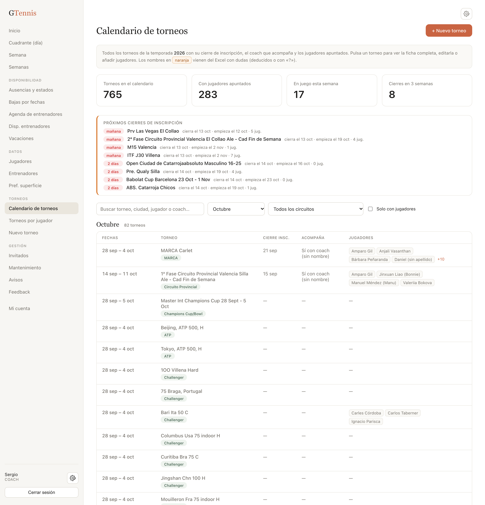
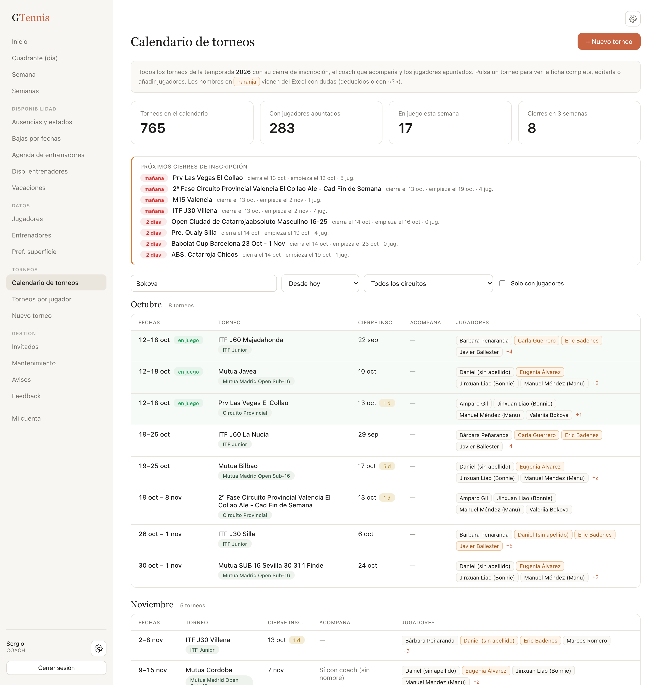
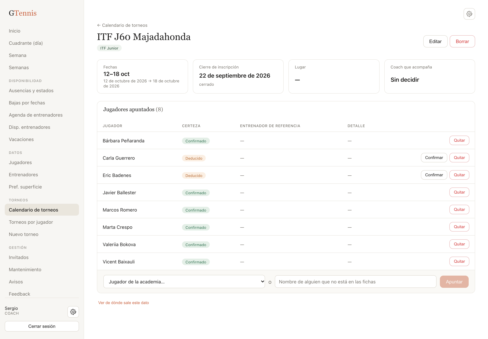
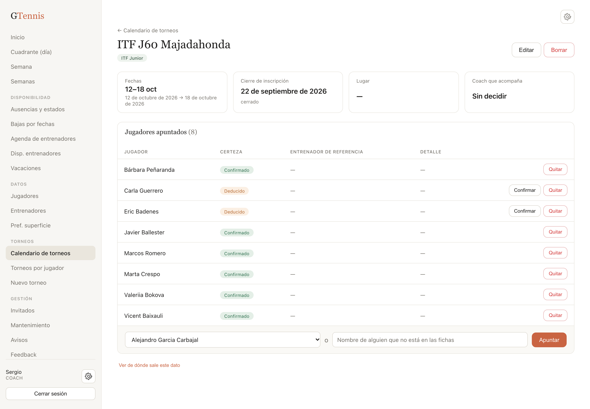
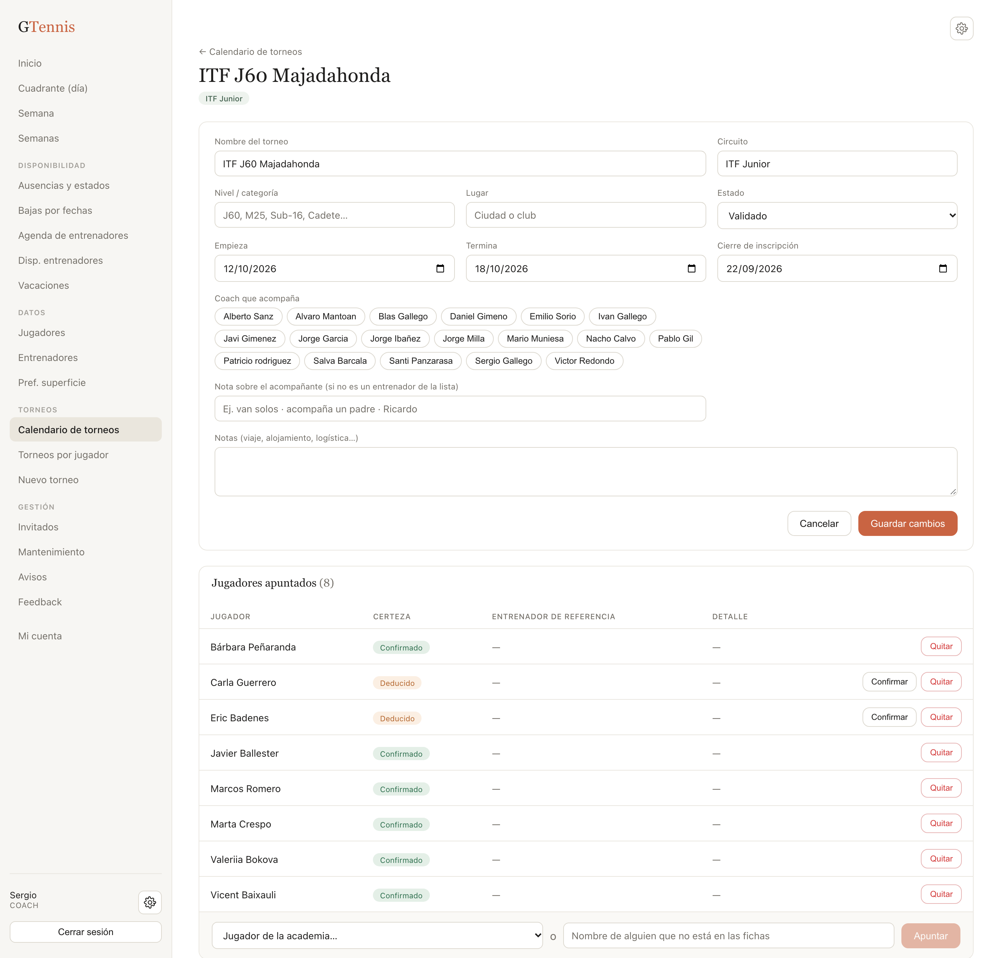
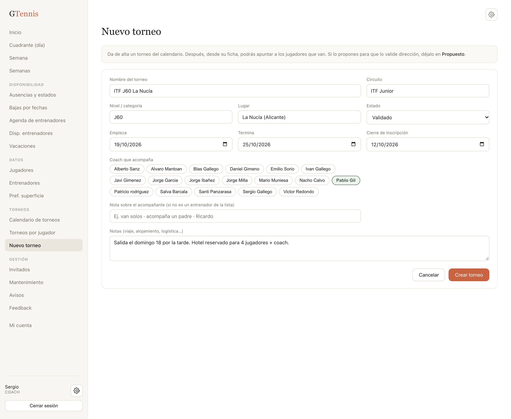
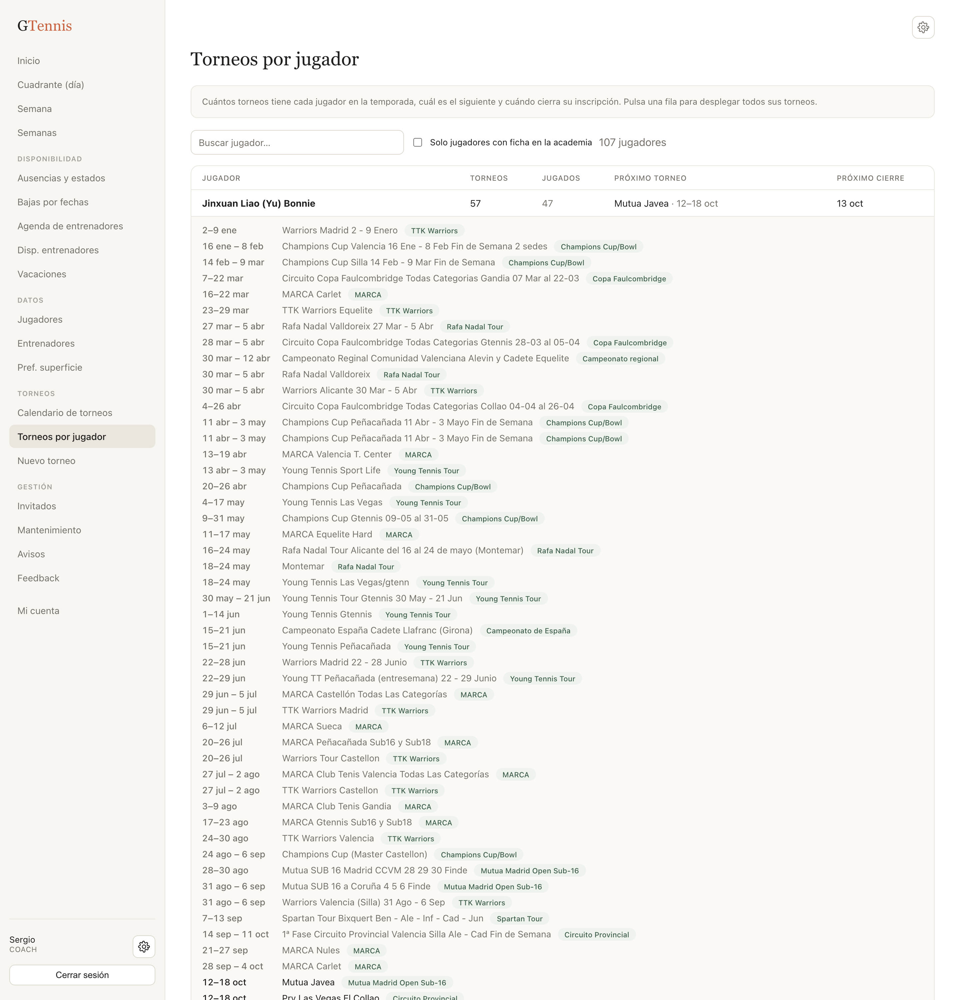
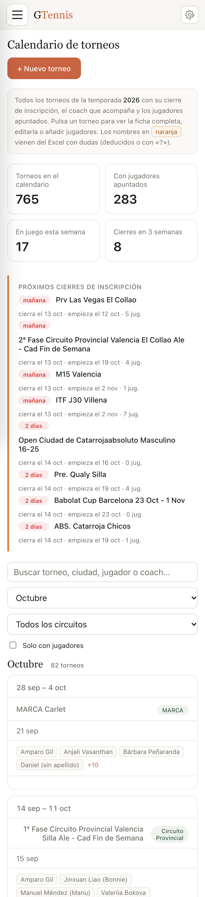
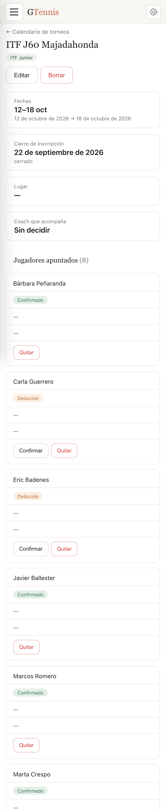

Manual de la demo · versión del 12 de octubre de 2026 · datos del Excel «CALENDARIO 2026»
En una frase: el calendario de torneos del club ya está dentro de la aplicación. Están los 765 torneos
de la temporada con sus fechas, cierre de inscripción, coach que acompaña y jugadores apuntados, y Sergio
puede añadir torneos nuevos, editarlos y apuntar jugadores sin tocar el Excel.
Es un módulo aparte del cuadrante de entrenamientos. Comparte con él los jugadores y los entrenadores
(son las mismas fichas), pero no toca las faltas ni la generación de pistas: lo que se haga aquí no cambia nada
del cuadrante. Más adelante, si se decide, una falta «En torneo» podrá apuntar a un torneo de este calendario.
Qué
Cuántos
De dónde
Torneos en el calendario
765
Pestaña «Calendario completo» del Excel limpio: todos los torneos que aparecen en la hoja maestra y en las 12 hojas de grupo, también los que nadie tiene asignados (ATP, WTA, Challengers del plan de los profesionales…).
Torneos con jugadores apuntados
283
Los que en alguna hoja tienen al menos un jugador.
Participaciones jugador × torneo
1.090
Pestaña «Jugador × torneo». 989 están enlazadas a una ficha de la academia; el resto son nombres que no están (o ya no están) en el cuadrante.
Jugadores con torneos
107
Incluye jugadores de fuera de las fichas (p. ej. Carlos Taberner, Elina Avanesian).
Cierres de inscripción
con fecha en la mayoría de los torneos del club
Columna «Cierre» de las hojas; los años 2025 copiados de la plantilla se han corregido a 2026.
2. Dónde está y quién puede hacer qué
En el menú de la izquierda hay una sección nueva, Torneos, con tres entradas:
Calendario de torneos: la lista completa, por meses, con buscador y filtros.
Torneos por jugador: cuántos torneos tiene cada jugador y cuál es el siguiente.
Nuevo torneo: el formulario de alta (solo lo ven dirección y coaches).
Rol
Ver el calendario y las fichas
Crear, editar, borrar torneos y apuntar jugadores
Dirección deportiva
Sí
Sí
Coach
Sí
Sí
Entrenador
Sí
No (solo consulta)
En la demo se entra como Sergio Gallego (coach), que tiene todos los permisos del módulo.
3. El calendario
Es la pantalla principal. De arriba abajo:
Cuatro cifras: torneos en el calendario, cuántos tienen jugadores, cuántos se están jugando esta semana y cuántos cierran inscripción en las próximas tres semanas.
Próximos cierres de inscripción: los torneos cuya inscripción cierra en los próximos 21 días, con los días que faltan (en rojo si son tres o menos), la fecha de inicio y cuántos jugadores hay apuntados. Pulsando el nombre se abre la ficha.
Buscador y filtros (ver apartado siguiente).
La tabla, mes a mes: fechas, nombre del torneo con su circuito, cierre de inscripción, coach que acompaña y jugadores apuntados.

El calendario con el mes actual (octubre) seleccionado.
Detalles de la tabla:
Un torneo que se está jugando ahora lleva la marca en juego y la fila sombreada; los ya pasados salen en gris.
Si el cierre de inscripción es en los próximos 7 días aparece 3 d junto a la fecha.
En «Acompaña» sale el entrenador de la ficha; si el Excel decía «Sí con coach (sin nombre)», «Sin acompañante» o un nombre que no es de la plantilla (Ricardo, Marcos E.), se muestra tal cual.
Los jugadores se muestran como etiquetas. A partir de cuatro aparece +N: pulsándolo se despliegan todos.
Una etiqueta naranja es un jugador que en el Excel estaba con dudas: deducido de un nombre de pila ambiguo («ERIC», «DIEGO», «CARLA») o con interrogación. En la ficha se puede confirmar o quitar.
4. Buscar y filtrar
Buscador: busca en el nombre del torneo, la ciudad, el circuito, los jugadores apuntados y el coach que acompaña. Escribir «Bokova» deja solo los torneos de Valeriia; escribir «Villena» o «ITF» hace lo propio.
Mes: por defecto el mes actual. «Desde hoy» muestra todo lo que queda de temporada; «Todo 2026», el año entero agrupado por meses. Un torneo de varias semanas aparece en cada mes que toca.
Circuito: ITF Junior, MARCA, TTK Warriors, Champions Cup, Mutua Sub-16, Rafa Nadal Tour… con el número de torneos entre paréntesis.
Solo con jugadores: oculta los torneos que están en el calendario pero sin nadie apuntado (útil para quitar de en medio el circuito profesional).

«Desde hoy» + «Bokova»: lo que le queda de temporada a Valeriia Bokova.
5. La ficha de un torneo
Se abre pulsando el nombre del torneo en cualquier lista. Tiene tres bloques:
Cabecera: nombre, circuito y nivel, y los botones Editar y Borrar.
Datos: fechas, cierre de inscripción (con los días que faltan, o «cerrado»), lugar, coach que acompaña y notas de viaje si las hay.
Jugadores apuntados: nombre, certeza, entrenador de referencia (el que figuraba en las hojas-rejilla del Excel, que no implica que viaje) y el detalle que pusiera el Excel.

Ficha del ITF J60 Majadahonda con ocho jugadores, dos de ellos deducidos del Excel.
La certeza de cada jugador:
Etiqueta
Significa
Qué hacer
Confirmado
En el Excel aparecía con nombre y apellido, sin dudas.
Nada.
Deducido
El Excel ponía solo un nombre de pila que comparten dos personas y se ha asignado al más probable según la hoja.
Si es correcto, Confirmar; si no, Quitar y apuntar al que sea.
Pendiente
En el Excel iba con «?» o no se pudo identificar.
Igual: confirmar o quitar.
Abajo del todo, «Ver de dónde sale este dato» muestra la hoja y la celda del Excel original de las que
viene el torneo y las otras formas en que estaba escrito («Warrrios Madrid», «WARRIORS Madrid (previa…)»). Sirve
para resolver dudas sin abrir el Excel a ciegas.
6. Apuntar y quitar jugadores
En la barra inferior del bloque de jugadores:
Elegir un jugador de la academia en el desplegable (solo salen los que no están ya apuntados) y pulsar Apuntar.
O escribir un nombre libre para alguien que no tiene ficha (un invitado, un jugador de otro club que viaja con el grupo).
Para quitar a alguien, Quitar en su fila. No pide confirmación: se puede volver a apuntar al momento.
No se puede apuntar dos veces a la misma persona al mismo torneo: la app avisa.

Jugador elegido en el desplegable, listo para «Apuntar».
7. Editar o borrar un torneo
Editar abre el formulario sobre la propia ficha, con todos los campos: nombre, circuito, nivel,
lugar, estado, fechas, cierre de inscripción, coach que acompaña (se marca pulsando el nombre), nota sobre el
acompañante y notas de viaje. Guardar cambios aplica; Cancelar deja todo como estaba.

El formulario de edición sobre la ficha.
Borrar quita el torneo del calendario y a sus jugadores apuntados. Pide confirmación. Si el torneo
simplemente no se va a jugar, es mejor cambiar su estado a Cancelado que borrarlo.
El formulario no deja que un torneo termine antes de empezar ni que la inscripción cierre
después de que haya terminado el torneo.
8. Dar de alta un torneo
Desde el menú Nuevo torneo o con el botón + Nuevo torneo del calendario.
Escribir el nombre tal como se dice en el club (p. ej. «ITF J60 La Nucía»).
Elegir el circuito: al escribir se proponen los ya existentes, para no tener «ITF Junior» e «ITF junior» como dos cosas distintas. Se puede escribir uno nuevo.
Nivel (J60, M25, Sub-16, Cadete…) y lugar, opcionales.
Fechas: empieza y termina. Si solo se pone la de inicio, el torneo dura un día.
Cierre de inscripción: es lo que alimenta la lista de «Próximos cierres» del calendario.
Coach que acompaña: pulsar uno o varios nombres. Si va otra persona o van solos, escribirlo en la nota.
Notas de viaje, alojamiento, logística.
Estado: Validado es lo normal. Propuesto sirve para dejar un torneo pendiente de que dirección lo vea; en el calendario sale marcado.
Al crear, se abre directamente la ficha para apuntar a los jugadores.

Alta de un torneo con Pablo Gil como acompañante.
9. Torneos por jugador
Una fila por jugador: cuántos torneos tiene en la temporada, cuántos ya se han jugado, el siguiente y el
próximo cierre de inscripción que le afecta. Pulsando la fila se despliega la lista completa con enlaces a cada
ficha. Hay buscador y un filtro para quedarse solo con los que tienen ficha en la academia.

Bonnie (Jinxuan Liao) con la lista desplegada: 57 torneos en el año.
10. En el móvil
Como el resto de la aplicación, funciona en el móvil y se puede instalar en la pantalla de inicio. Las tablas
se convierten en tarjetas y los filtros se apilan.


El calendario y una ficha vistos en un iPhone.
11. De dónde salen los datos y qué conviene revisar
Todo viene del Excel «CALENDARIO 2026» pasado por la limpieza que se entregó el 28 de septiembre (PDF de
validación, PDF semana a semana y Excel de datos limpios). Reglas aplicadas al cargarlo en la app:
Un torneo por tramo: si el mismo nombre aparece varias semanas seguidas (Champions Cup Silla del 14 de febrero al 9 de marzo), es un solo torneo con todo el tramo. Si reaparece más adelante con semanas de por medio (MARCA Carlet en marzo y en septiembre), son dos.
Fechas: cuando el nombre las lleva («2 - 9 Enero», «del 16 al 24 de mayo», «28 29 30»), se usan esas (95 torneos). Si no, el torneo va de lunes a domingo de la semana en que estaba apuntado.
Cierre de inscripción: el del Excel. Los que tenían año 2025 por arrastre de la plantilla se han pasado a 2026. Si había dos cierres, se guarda el primero.
Jugadores: se cruzan con las fichas por nombre y apellidos, admitiendo que el Excel ponga menos apellidos que la ficha («Amparo Gil» = Amparo Gil Pitarque) y corrigiendo erratas conocidas (Teporoca/Teporaca, Andrienko/Adrienko, Ximo/Chimo Mínguez).
Coach que acompaña: de la columna COACH de las hojas-lista. Los nombres que no son de la plantilla quedan como nota.
Para revisar con calma (no bloquea la demo):
20 nombres del Excel no tienen ficha en la academia y quedan como texto: Aarish, Andy Liu, Ashmita Mitra, Barry, Cristian Borriello, Daniela Martínez, Diego Inostroza, Elene Churruca, Emma Ghibardato, Félix Gil, Omar Ally, Sofía Fandos, Viraj, «Daniel» y «Elena» sin apellido, «David (¿Mas o Castillo?)» y cuatro columnas sin nombre de la hoja de Mario.
Dos acompañantes sin ficha de entrenador: Marcos E. y Ricardo.
Los jugadores marcados como deducidos: confirmarlos o quitarlos desde cada ficha.
Los 190 avisos de la pestaña «Incidencias» del Excel limpio siguen siendo la lista de dudas; la app no los repite.
La carga es repetible: si se corrige el Excel, se puede volver a cargar sin perder los torneos dados de alta
a mano en la app.
12. Qué no está todavía
Enlace con las faltas: que al declarar «En torneo» en el cuadrante se elija el torneo y la falta se rellene sola con sus fechas. Está diseñado; se activa cuando se valide este módulo.
Avisos de cierre de inscripción y de viaje en el buzón de avisos de la app (hoy el aviso es la lista de «Próximos cierres» del calendario).
Flujo propuesta → validación completo: el estado «Propuesto» existe, pero no hay todavía un aviso a dirección ni un botón «Validar» específico.
Resultados y la vista para familias: fuera del alcance, como se acordó.